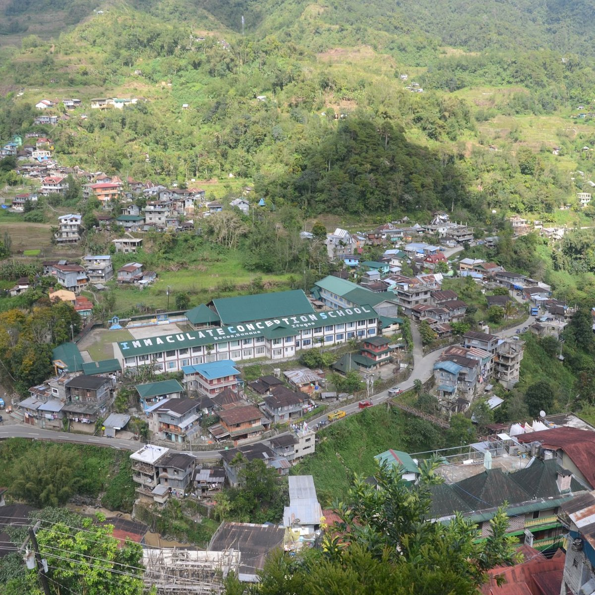
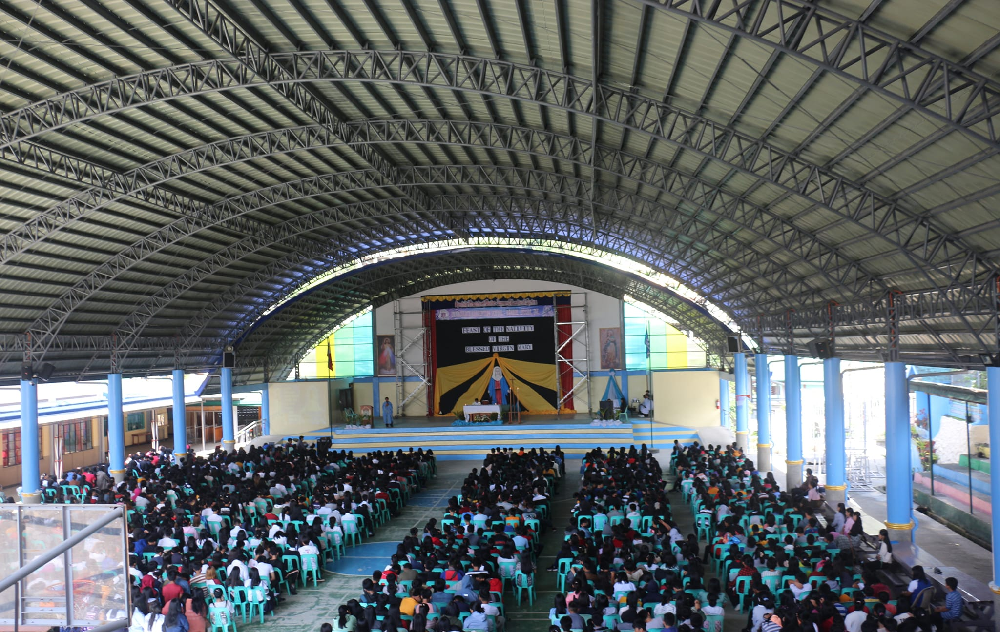

Our School History in Banaue
Founded in Faith Amidst the Rice Terraces
Immaculate Conception School in Banaue, Ifugao, stands as a beacon of Catholic education in the heart of the Cordilleras. Established in the 1960s by the Missionary CICM fathers and the ICM sisters, our school was built to serve the indigenous Ifugao communities surrounding the world-famous Banaue Rice Terraces.
For over five decades, ICS Banaue has been more than just a school—it's been a second home to generations of Ifugao students. From humble beginnings with makeshift classrooms, we've grown into a complete basic education institution serving Kindergarten to High School. Our location offers a unique view of the majestic mountains and terraces that our ancestors built over 2,000 years ago.
Our Unique Heritage
What makes ICS Banaue special is our blend of Catholic values and Ifugao culture. We celebrate both our Christian faith and our indigenous traditions. Students learn not only academics but also the rich heritage of the Ifugao people—our weaving, our hudhud chants (UNESCO heritage), and our respect for nature.
Our Mission
To provide quality Catholic education to the youth of Banaue and neighboring municipalities like Mayoyao, Hungduan, and Kiangan, while preserving and honoring the unique Ifugao culture and traditions.
Pictures

Our campus with the breathtaking Cordillera mountains in the background.

Celebrating the Feast of the Nativity of the Blessed Virgin Mary.
Our Group Members
Meet the dedicated team behind this project:
- Stephanie Limmicna
- Lyriz Jean Lag-oy
- Eslay sean Preston
- Melodyn Abluyen
- Herald ognayon
- Jhoniel Eheta